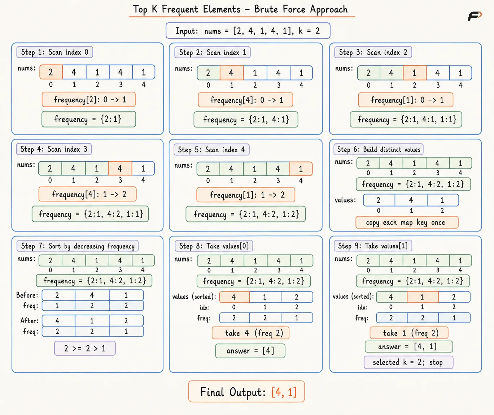
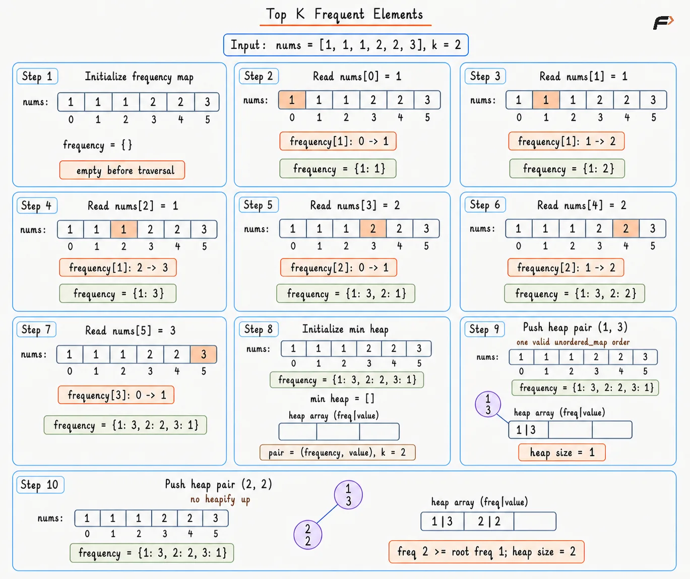
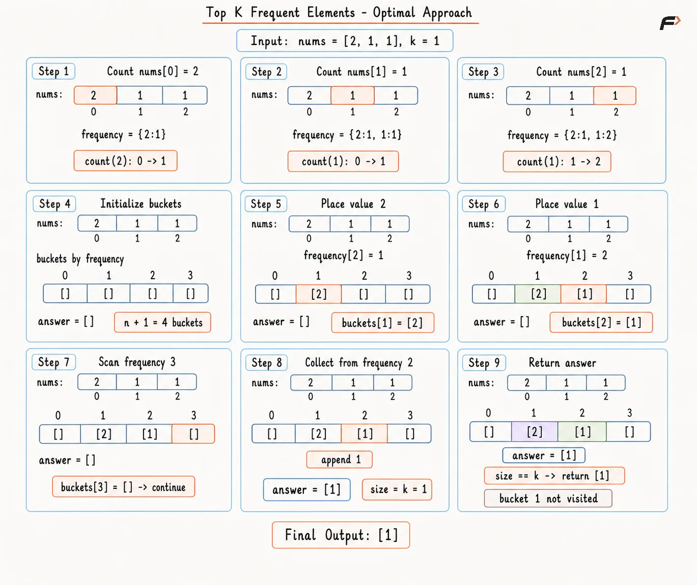

Top K Frequent Elements
An integer array nums and a positive integer k are given. Every distinct value has a frequency equal to the number of occurrences in nums.
Return exactly k distinct values having the highest frequencies. Result order does not matter, and a unique answer is guaranteed.
Example 1
Input: nums = [1, 1, 1, 2, 2, 3], k = 2
Output: [1, 2]
Explanation: Value 1 appears 3 times, value 2 appears 2 times, and value 3 appears once. Values 1 and 2 have the two highest frequencies.
Example 2
Input: nums = [4], k = 1
Output: [4]
Explanation: Value 4 is the only distinct value, so the single required result is 4.
Brute Force Approach
The frequency of each value must be known before deciding which elements appear most often. A hash map makes this easy by storing one count for every distinct value. After counting, sorting the distinct values by decreasing frequency places the most frequent values first.
Only the first k values are required after sorting. This approach is simple and easy to understand, but it sorts all distinct values even though only the top k are needed.
Algorithm
Create a hash map named
frequencyto store the occurrence count of every distinct value.Traverse
numsand increase the corresponding count, because the most frequent values can only be identified after their frequencies are known.Copy all distinct values from the hash map into a list named
values, so they can be sorted using their stored frequencies.Sort
valuesin decreasing order of frequency, because higher-frequency values must appear first.Keep any order among values with equal frequency because the result may be returned in any order.
Take the first
kvalues from the sorted list, because they have the highest frequencies.Return these
kvalues as the result.
Dry Run

Top-k frequent brute
Solution
#include <bits/stdc++.h>
using namespace std;
class Solution {
public:
// Finds top k values by sorting distinct values.
vector<int> topKFrequent(vector<int>& nums, int k) {
unordered_map<int, int> frequency;
// Save one occurrence count for every value.
for (int value : nums) {
frequency[value]++;
}
vector<int> values;
// Store every distinct value once for sorting.
for (auto entry : frequency) {
values.push_back(entry.first);
}
// Place larger saved frequencies first.
sort(values.begin(), values.end(),
[&](int first, int second) {
return frequency[first] > frequency[second];
});
vector<int> answer;
// Copy only the first k sorted values.
for (int index = 0; index < k; index++) {
answer.push_back(values[index]);
}
return answer;
}
};
// Driver code
int main() {
vector<int> nums = {1, 1, 1, 2, 2, 3};
int k = 2;
Solution obj;
vector<int> answer = obj.topKFrequent(nums, k);
for (int value : answer) {
cout << value << " ";
}
cout << endl;
return 0;
}Complexity Analysis
Time Complexity: O(N + U log U), where N is the number of elements in nums and U is the number of distinct values. Frequency counting takes O(N), while sorting the U distinct values takes O(U log U).
Space Complexity: O(U + k), because the frequency map and distinct-value list store U entries, while the result stores k values.
Better Approach
Sorting all distinct values is unnecessary because only the top k frequencies matter. A min-heap of size k keeps only the strongest candidates, with the smallest frequency among them always available at the root.
Each distinct value is inserted once. Whenever the heap grows beyond k, remove the root because that value cannot remain among the current top k frequencies. After all values are processed, the heap contains exactly the required candidates.
Algorithm
Create a hash map named
frequencyto store the occurrence count of every distinct value.Traverse
numsand update the count of each value, because heap comparisons need the complete frequencies.Create an empty min-heap to store
(frequency, value)pairs, so the weakest retained candidate stays at the root.Insert every distinct value with its frequency into the heap, allowing each value to compete for a top-
kposition.If the heap size becomes greater than
k, remove the root because the smallest frequency is no longer needed.After processing all distinct values, extract the remaining heap values into the result.
Return the result because the heap now contains exactly the
kmost frequent values.
Dry Run

Diagram 1
Solution
#include <bits/stdc++.h>
using namespace std;
class Solution {
public:
// Finds top k values with a bounded min-heap.
vector<int> topKFrequent(vector<int>& nums, int k) {
unordered_map<int, int> frequency;
// Save one occurrence count for every value.
for (int value : nums) {
frequency[value]++;
}
priority_queue<
pair<int, int>,
vector<pair<int, int>>,
greater<pair<int, int>>
> minHeap;
// Let every distinct value compete for the heap.
for (auto entry : frequency) {
minHeap.push({entry.second, entry.first});
// An overflow contains one weak candidate.
if (minHeap.size() > k) {
minHeap.pop();
}
}
vector<int> answer;
// Extract every retained top-frequency value.
while (!minHeap.empty()) {
answer.push_back(minHeap.top().second);
minHeap.pop();
}
return answer;
}
};
// Driver code
int main() {
vector<int> nums = {1, 1, 1, 2, 2, 3};
int k = 2;
Solution obj;
vector<int> answer = obj.topKFrequent(nums, k);
for (int value : answer) {
cout << value << " ";
}
cout << endl;
return 0;
}Complexity Analysis
Time Complexity: O(N + U log k), where N is the number of elements in nums and U is the number of distinct values. Counting frequencies takes O(N), and each distinct value performs a heap operation on a heap of size at most k.
Space Complexity: O(U + k), because the hash map stores frequencies for U distinct values, while the heap and result store at most k values each.
Optimal Approach
The largest possible frequency equals the array length. A bucket array can therefore use frequency as an index, placing every distinct value directly into the matching occurrence-count group.
Scanning buckets from high frequency to low frequency visits the most popular groups first. Collection stops after k values, removing all comparison sorting and heap maintenance.
Algorithm
Begin with a hash map named
frequency, so every distinct value receives a complete occurrence count.Scan all values in
numsonce and increase matching counts, allowing direct bucket placement after counting ends.Create
n + 1buckets because a value frequency ranges from1through the array lengthn.Place every distinct value into the bucket indexed by the saved frequency, so bucket position represents popularity without comparisons.
Scan bucket indices from
ndown to1, ensuring larger frequencies contribute result values before smaller frequencies.Append values from each visited bucket and stop at result size
k, avoiding unnecessary scans through lower-frequency groups.Return the collected values because descending bucket traversal selects exactly the highest-frequency groups.
Dry Run

Top-k frequent optimal
Solution
#include <bits/stdc++.h>
using namespace std;
class Solution {
public:
// Finds top k values with frequency buckets.
vector<int> topKFrequent(vector<int>& nums, int k) {
unordered_map<int, int> frequency;
// Save one occurrence count for every value.
for (int value : nums) {
frequency[value]++;
}
int n = nums.size();
vector<vector<int>> buckets(n + 1);
// Group values by exact occurrence count.
for (auto entry : frequency) {
buckets[entry.second].push_back(entry.first);
}
vector<int> answer;
// Visit larger frequencies before smaller ones.
for (int count = n; count >= 1; count--) {
// Collect every value from the current group.
for (int value : buckets[count]) {
answer.push_back(value);
// Exactly k values complete the result.
if (answer.size() == k) {
return answer;
}
}
}
return answer;
}
};
// Driver code
int main() {
vector<int> nums = {1, 1, 1, 2, 2, 3};
int k = 2;
Solution obj;
vector<int> answer = obj.topKFrequent(nums, k);
for (int value : answer) {
cout << value << " ";
}
cout << endl;
return 0;
}Complexity Analysis
Time Complexity: O(N), where N is the number of elements in nums, because frequency counting, bucket construction, bucket filling, and result collection together require linear work.
Space Complexity: O(N), because the frequency map, bucket array, stored distinct values, and result can together use linear auxiliary space.
Interview follow-up Questions
No. The returned elements can usually appear in any order as long as they are the k elements with the highest frequencies.